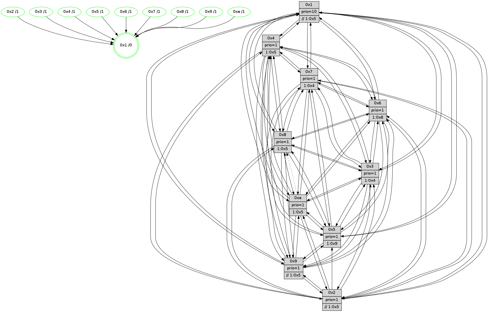

>> << IDX [start] -100 -25 -5 +0 +5 +25 +100 [785.407051086]
 Previous packets
780.002497 [Hello(8): seq=443 sym=5,2,3,4,7,6,9,10,1 sysInfo=hasWarning stat=5:8,7,15,9/2:1,0,5,2/3:5,15,11,9/4:6,3,13,6/7:4,14,14,8/6:8,4,10,8/9:7,2,13,6/10:2,3,1,0/1:13,12,2,0]
780.005195 [Hello(10): seq=432 sym=6,2,3,5,7,4,1 asym=8 sysInfo=hasWarning stat=6:1,5,14,3/2:9,2,5,2/3:0,14,4,6/5:12,5,11,10/7:9,2,12,4/4:15,6,5,6/1:8,14,5,1/8:6,7,9,7]
780.007561 [Color(3) seq=140 @0:0 prio=1 >1.@4,1.@5,1.@6,1.@7]
780.009439 [Color(10) seq=131 @0:0 prio=1 >1.@5,1.@8,1.@9]
780.014866 [Color(8) seq=166 @0:0 prio=1 >1.@5,1.@9,1.@a]
780.019869 [Hello(9): seq=443 sym=2,5,3,4,7,6,8,10,1 sysInfo=hasWarning stat=2:1,10,4,0/5:2,6,6,1/3:2,7,6,9/4:3,2,9,5/7:5,3,0,6/6:7,12,11,6/8:13,2,2,0/10:6,13,2,0/1:3,9,5,1]
780.024308 [Color(9) seq=148 @0:0 prio=1 >>1.@5,1.@6,1.@7]
----------------------------------------------------------------------
780.678268 beacon01(faad) #0 coord=01,02,03,04,05,06,07,0a,09,08 cycle=688.0ms assoc
-- color-indic=1 64 4a 51
780.688251 beacon02(faad) #0 coord=01,02,03,04,05,06,07,0a,09,08 cycle=688.0ms assoc 64 d9 60
780.698250 beacon03(faad) #0 coord=01,02,03,04,05,06,07,0a,09,08 cycle=688.0ms assoc 64 a3 2d
780.708250 beacon04(faad) #0 coord=01,02,03,04,05,06,07,0a,09,08 cycle=688.0ms assoc 64 d4 c7
780.718250 beacon05(faad) #0 coord=01,02,03,04,05,06,07,0a,09,08 cycle=688.0ms assoc 64 ae 8a
780.728251 beacon06(faad) #0 coord=01,02,03,04,05,06,07,0a,09,08 cycle=688.0ms assoc 64 20 5d
780.738250 beacon07(faad) #0 coord=01,02,03,04,05,06,07,0a,09,08 cycle=688.0ms assoc 64 5a 10
780.748255 beacon0a(faad) #0 coord=01,02,03,04,05,06,07,0a,09,08 cycle=688.0ms assoc 64 2b 1b
780.758258 beacon09(faad) #0 coord=01,02,03,04,05,06,07,0a,09,08 cycle=688.0ms assoc 64 a5 cc
780.768256 beacon08(faad) #0 coord=01,02,03,04,05,06,07,0a,09,08 cycle=688.0ms assoc 64 df 81
780.779491 [Hello(3): seq=500 sym=1,7,6,2,4,8,9,10,5 sysInfo= stat=1:9,12,7,0/7:2,3,10,4/6:2,3,6,8/2:5,5,9,8/4:13,15,7,5/8:14,3,9,3/9:4,13,14,7/10:6,7,12,7/5:15,4,8,8]
780.783993 [Hello(5): seq=500 sym=7,6,4,3,1,9,8,10,2 sysInfo=hasWarning stat=7:7,12,1,6/6:4,10,0,7/4:2,7,4,5/3:3,4,6,7/1:0,7,4,1/9:10,7,9,0/8:14,15,7,5/10:2,6,5,1/2:5,10,4,0]
780.786976 [Hello(2): seq=496 sym=4,5,7,6,3,9,8,10,1 sysInfo=hasWarning stat=4:11,1,9,4/5:15,8,6,2/7:5,8,1,6/6:0,12,14,6/3:14,9,7,4/9:3,7,7,0/8:2,3,7,5/10:10,9,8,6/1:0,3,15,1]
780.790103 [Color(2) seq=145 @0:0 prio=1 >>1.@2,1.@3,1.@5]
780.792055 [Color(5) seq=153 @0:0 prio=1 >1.@9,1.@a]
780.793575 [Color(4) seq=129 @0:0 prio=1 >1.@5,1.@8,1.@9,1.@a]
780.799311 [Color(7) seq=119 @0:0 prio=1 >1.@4,1.@5,1.@6,1.@8]
780.802626 [Hello(1): seq=409 sym=4,2,9,5,10,3,8,6,7 sysInfo=coloring-mode-on,ColoringModeRequestCalled stat=4:11,3,15,0/2:7,10,5,9/9:11,2,12,1/5:7,8,14,2/10:4,14,3,8/3:5,2,2,0/8:15,13,6,7/6:8,9,5,7/7:11,0,10,10]
780.806303 [Hello(6): seq=500 sym=2,3,5,4,7,9,8,10,1 sysInfo= stat=2:12,10,3,7/3:15,12,11,7/5:7,5,13,10/4:5,4,10,0/7:13,4,10,2/9:0,1,0,0/8:5,10,12,6/10:9,1,2,7/1:15,10,0,1]
----------------------------------------------------------------------
781.466400 beacon01(faad) #0 coord=01,02,03,04,05,06,07,0a,09,08 cycle=688.0ms assoc
-- color-indic=1 64 f6 54
781.476382 beacon02(faad) #0 coord=01,02,03,04,05,06,07,0a,09,08 cycle=688.0ms assoc 64 65 65
781.486383 beacon03(faad) #0 coord=01,02,03,04,05,06,07,0a,09,08 cycle=688.0ms assoc 64 1f 28
781.496384 beacon04(faad) #0 coord=01,02,03,04,05,06,07,0a,09,08 cycle=688.0ms assoc 64 68 c2
781.506383 beacon05(faad) #0 coord=01,02,03,04,05,06,07,0a,09,08 cycle=688.0ms assoc 64 12 8f
781.516383 beacon06(faad) #0 coord=01,02,03,04,05,06,07,0a,09,08 cycle=688.0ms assoc 64 9c 58
781.526384 beacon07(faad) #0 coord=01,02,03,04,05,06,07,0a,09,08 cycle=688.0ms assoc 64 e6 15
781.536389 beacon0a(faad) #0 coord=01,02,03,04,05,06,07,0a,09,08 cycle=688.0ms assoc 64 97 1e
781.546388 beacon09(faad) #0 coord=01,02,03,04,05,06,07,0a,09,08 cycle=688.0ms assoc 64 19 c9
781.556388 beacon08(faad) #0 coord=01,02,03,04,05,06,07,0a,09,08 cycle=688.0ms assoc 64 63 84
781.568243 [Hello(7): seq=500 sym=2,3,5,6,4,8,9,10,1 sysInfo=hasWarning stat=2:7,10,2,10/3:6,0,0,9/5:6,11,1,13/6:0,11,0,3/4:0,0,0,0/8:15,6,0,5/9:14,2,15,9/10:6,4,1,8/1:15,11,4,0]
781.571283 [Color(3) seq=141 @0:0 prio=1 >1.@4,1.@5,1.@6,1.@7]
781.573058 [STC(1) #0.83 tree-change,inconsistent-stability,stable,to-color d=0]
781.574696 [Hello(8): seq=444 sym=5,2,3,4,7,6,9,10,1 sysInfo=hasWarning stat=5:9,8,15,9/2:2,1,5,2/3:6,15,11,9/4:7,4,13,6/7:4,15,14,8/6:9,5,10,8/9:8,3,13,6/10:2,3,1,0/1:14,12,2,0]
781.577593 [Hello(9): seq=444 sym=2,5,3,4,7,6,8,10,1 sysInfo=hasWarning stat=2:2,11,4,0/5:3,7,6,1/3:3,7,6,9/4:4,3,9,5/7:5,4,0,6/6:8,13,11,6/8:13,2,2,0/10:6,13,2,0/1:4,9,5,1]
781.581071 [Color(9) seq=149 @0:0 prio=1 >>1.@5,1.@6,1.@7]
781.582757 [Color(8) seq=167 @0:0 prio=1 >1.@5,1.@9,1.@a]
781.585315 [Color(6) seq=154 @0:0 prio=1 >1.@8,1.@9,1.@a]
781.587852 [Hello(4): seq=500 sym=5,7,6,2,3,9,8,10,1 sysInfo= stat=5:3,13,10,8/7:0,5,13,3/6:15,3,13,8/2:1,14,7,8/3:15,7,6,5/9:1,6,11,3/8:5,10,12,8/10:11,7,15,7/1:6,12,5,1]
781.591600 [Hello(10): seq=433 sym=6,2,3,9,5,7,4,1 asym=8 sysInfo=hasWarning stat=6:2,6,14,3/2:10,3,5,2/3:1,15,4,6/9:0,1,0,0/5:13,6,11,10/7:9,3,12,4/4:0,7,5,6/1:9,14,5,1/8:6,8,9,7]
781.595425 [Color(1) seq=181 @0:0 prio=10 >>1.@5,1.@6,1.@7]
781.601338 [Color(10) seq=132 @0:0 prio=1 >1.@5,1.@8,1.@9]
----------------------------------------------------------------------
782.254531 beacon01(faad) #0 coord=01,02,03,04,05,06,07,0a,09,08 cycle=688.0ms assoc
-- color-indic=1 64 32 5a
782.264514 beacon02(faad) #0 coord=01,02,03,04,05,06,07,0a,09,08 cycle=688.0ms assoc 64 a1 6b
782.274514 beacon03(faad) #0 coord=01,02,03,04,05,06,07,0a,09,08 cycle=688.0ms assoc 64 db 26
782.284513 beacon04(faad) #0 coord=01,02,03,04,05,06,07,0a,09,08 cycle=688.0ms assoc 64 ac cc
782.294513 beacon05(faad) #0 coord=01,02,03,04,05,06,07,0a,09,08 cycle=688.0ms assoc 64 d6 81
782.304514 beacon06(faad) #0 coord=01,02,03,04,05,06,07,0a,09,08 cycle=688.0ms assoc 64 58 56
782.314514 beacon07(faad) #0 coord=01,02,03,04,05,06,07,0a,09,08 cycle=688.0ms assoc 64 22 1b
782.324517 beacon0a(faad) #0 coord=01,02,03,04,05,06,07,0a,09,08 cycle=688.0ms assoc 64 53 10
782.334502 beacon09(faad) #0 coord=01,02,03,04,05,06,07,0a,09,08 cycle=688.0ms assoc 64 dd c7
782.344520 beacon08(faad) #0 coord=01,02,03,04,05,06,07,0a,09,08 cycle=688.0ms assoc 64 a7 8a
782.355971 [Hello(3): seq=501 sym=1,7,6,2,4,8,9,10,5 sysInfo= stat=1:10,13,8,0/7:3,4,10,4/6:3,4,6,8/2:6,6,9,8/4:14,0,7,5/8:15,4,9,3/9:5,14,14,7/10:7,8,12,7/5:0,5,8,8]
782.358415 [Hello(6): seq=501 sym=2,3,5,4,7,9,8,10,1 sysInfo= stat=2:12,10,3,7/3:15,12,11,7/5:7,5,13,10/4:6,4,10,0/7:14,4,10,2/9:0,1,0,0/8:5,10,12,6/10:10,2,2,7/1:15,11,0,1]
782.361071 [Color(4) seq=130 @0:0 prio=1 >1.@5,1.@8,1.@9,1.@a]
782.362738 [Hello(1): seq=410 sym=4,2,9,5,10,3,8,6,7 sysInfo=coloring-mode-on,ColoringModeRequestCalled stat=4:11,3,15,0/2:7,10,5,9/9:11,2,12,1/5:7,8,14,2/10:4,15,3,8/3:5,2,2,0/8:15,13,6,7/6:9,9,5,7/7:12,0,10,10]
782.367734 [Hello(5): seq=501 sym=7,6,4,3,1,9,8,10,2 sysInfo=hasWarning stat=7:8,13,1,6/6:5,11,0,7/4:3,8,4,5/3:4,5,6,7/1:1,8,5,1/9:11,8,9,0/8:15,0,7,5/10:3,7,5,1/2:5,10,4,0]
782.372096 [STC(3)->1 #0.83 tree-change,inconsistent-stability,stable,to-color d=1]
782.375344 [STC(7)->1 #0.83 tree-change,inconsistent-stability,stable,to-color d=1]
782.378484 [Hello(2): seq=497 sym=4,5,7,6,3,9,8,10,1 sysInfo=hasWarning stat=4:12,2,9,4/5:15,9,6,2/7:6,9,1,6/6:1,13,14,6/3:15,10,7,4/9:4,8,7,0/8:3,4,7,5/10:11,10,8,6/1:1,4,0,1]
782.381330 [STC(2)->1 #0.83 tree-change,inconsistent-stability,stable,to-color d=1]
782.382981 [Color(2) seq=146 @0:0 prio=1 >>1.@5,1.@6,1.@7]
782.387789 [Color(7) seq=120 @0:0 prio=1 >1.@4,1.@5,1.@6,1.@8]
782.390358 [STC(5)->1 #0.83 tree-change,inconsistent-stability,stable,to-color d=1]
782.393600 [Color(5) seq=154 @0:0 prio=1 >1.@9,1.@a]
----------------------------------------------------------------------
783.042660 beacon01(faad) #0 coord=01,02,03,04,05,06,07,0a,09,08 cycle=688.0ms assoc
-- color-indic=1 64 8e 5f
783.052641 beacon02(faad) #0 coord=01,02,03,04,05,06,07,0a,09,08 cycle=688.0ms assoc 64 1d 6e
783.062643 beacon03(faad) #0 coord=01,02,03,04,05,06,07,0a,09,08 cycle=688.0ms assoc 64 67 23
783.072642 beacon04(faad) #0 coord=01,02,03,04,05,06,07,0a,09,08 cycle=688.0ms assoc 64 10 c9
783.082644 beacon05(faad) #0 coord=01,02,03,04,05,06,07,0a,09,08 cycle=688.0ms assoc 64 6a 84
783.092643 beacon06(faad) #0 coord=01,02,03,04,05,06,07,0a,09,08 cycle=688.0ms assoc 64 e4 53
783.102644 beacon07(faad) #0 coord=01,02,03,04,05,06,07,0a,09,08 cycle=688.0ms assoc 64 9e 1e
783.112648 beacon0a(faad) #0 coord=01,02,03,04,05,06,07,0a,09,08 cycle=688.0ms assoc 64 ef 15
783.122648 beacon09(faad) #0 coord=01,02,03,04,05,06,07,0a,09,08 cycle=688.0ms assoc 64 61 c2
783.132648 beacon08(faad) #0 coord=01,02,03,04,05,06,07,0a,09,08 cycle=688.0ms assoc 64 1b 8f
783.143870 PARSE ERROR************************
Traceback (most recent call last):
File "PacketAnalysis.py", line 167, in showOperaPacket
structPacket = OperaPacketParse.parsePacket(rawPacket)
File "../../pkg-python/HipSens/Core/OperaPacketParse.py", line 461, in parsePacket
return parseHelloMessage(data)
File "../../pkg-python/HipSens/Core/OperaPacketParse.py", line 109, in parseHelloMessage
sysInfo,stability,colorInfo = struct.unpack("!HBB", linkList[0:4])
error: unpack requires a string argument of length 4
48 34 07 00 01 f5 00 02 02 12 02 00 03 00 05 00 06 00 04 00 08 00 09 00 0a 00 01 00 53 04 00 02 00 00 4c 12 a2 a7 90 17 d2 c6 30 c0 00 01 50 70 9f 3f 81 57 05 cf 53 48
783.147741 [Hello(10): seq=434 sym=6,2,3,9,5,7,4,1 asym=8 sysInfo=hasWarning stat=6:2,6,14,3/2:11,4,6,2/3:2,15,5,6/9:0,1,0,0/5:14,7,12,10/7:10,4,13,4/4:0,8,5,6/1:10,14,5,1/8:6,8,9,7]
783.150337 [Hello(8): seq=445 sym=5,2,3,4,7,6,9,10,1 sysInfo=hasWarning stat=5:10,9,0,9/2:3,2,6,2/3:7,15,12,9/4:8,5,13,6/7:5,0,15,8/6:9,6,10,8/9:8,3,13,6/10:3,4,1,0/1:15,13,2,0]
783.153171 [Color(8) seq=168 @0:0 prio=1 >1.@5,1.@9,1.@a]
783.154915 [Color(10) seq=133 @0:0 prio=1 >1.@5,1.@8,1.@9]
783.156956 [Color(6) seq=155 @0:0 prio=1 >1.@8,1.@9,1.@a]
783.160251 [Hello(9): seq=445 sym=2,5,3,4,7,6,8,10,1 sysInfo=hasWarning stat=2:3,12,5,0/5:4,8,7,1/3:4,7,7,9/4:5,4,9,5/7:6,5,1,6/6:8,14,11,6/8:13,3,2,0/10:7,14,2,0/1:5,10,5,1]
783.163408 [Color(9) seq=150 @0:0 prio=1 >>1.@5,1.@6,1.@7]
783.165725 [Hello(4): seq=501 sym=5,7,6,2,3,9,8,10,1 sysInfo= stat=5:4,14,11,8/7:0,6,14,3/6:15,3,13,8/2:2,15,8,8/3:0,7,7,5/9:1,6,11,3/8:5,10,12,8/10:12,8,15,7/1:7,13,5,1]
783.169968 [Color(3) seq=142 @0:0 prio=1 >1.@4,1.@5,1.@6,1.@7]
----------------------------------------------------------------------
783.830790 beacon01(faad) #0 coord=01,02,03,04,05,06,07,0a,09,08 cycle=688.0ms assoc
-- color-indic=1 64 ba 47
783.840773 beacon02(faad) #0 coord=01,02,03,04,05,06,07,0a,09,08 cycle=688.0ms assoc 64 29 76
783.850772 beacon03(faad) #0 coord=01,02,03,04,05,06,07,0a,09,08 cycle=688.0ms assoc 64 53 3b
783.860774 beacon04(faad) #0 coord=01,02,03,04,05,06,07,0a,09,08 cycle=688.0ms assoc 64 24 d1
783.870773 beacon05(faad) #0 coord=01,02,03,04,05,06,07,0a,09,08 cycle=688.0ms assoc 64 5e 9c
783.880775 beacon06(faad) #0 coord=01,02,03,04,05,06,07,0a,09,08 cycle=688.0ms assoc 64 d0 4b
783.890773 beacon07(faad) #0 coord=01,02,03,04,05,06,07,0a,09,08 cycle=688.0ms assoc 64 aa 06
783.900779 beacon0a(faad) #0 coord=01,02,03,04,05,06,07,0a,09,08 cycle=688.0ms assoc 64 db 0d
783.910778 beacon09(faad) #0 coord=01,02,03,04,05,06,07,0a,09,08 cycle=688.0ms assoc 64 55 da
783.920779 beacon08(faad) #0 coord=01,02,03,04,05,06,07,0a,09,08 cycle=688.0ms assoc 64 2f 97
783.933280 [Hello(6): seq=502 sym=2,3,5,4,7,9,8,10,1 sysInfo= stat=2:13,11,4,7/3:15,13,12,7/5:8,6,14,10/4:6,5,10,0/7:15,5,11,2/9:1,2,0,0/8:5,10,12,6/10:10,2,2,7/1:0,11,0,1]
783.936131 [Hello(1): seq=411 sym=4,2,9,5,10,3,8,6,7 sysInfo=coloring-mode-on,ColoringModeRequestCalled stat=4:11,3,15,0/2:8,11,6,9/9:11,2,12,1/5:8,9,15,2/10:4,15,3,8/3:5,3,3,0/8:15,13,6,7/6:9,9,5,7/7:13,1,11,10]
783.938570 [Hello(2): seq=498 sym=4,5,7,6,3,9,8,10,1 sysInfo=hasWarning stat=4:12,2,9,4/5:15,10,7,2/7:7,10,1,6/6:1,14,14,6/3:0,11,7,4/9:5,9,7,0/8:4,5,7,5/10:12,11,8,6/1:1,4,0,1]
783.942338 [Color(2) seq=147 @0:0 prio=1 >>1.@5,1.@6,1.@7]
783.943949 [Hello(5): seq=502 sym=7,6,4,3,1,9,8,10 sysInfo=hasWarning stat=7:9,13,1,6/6:5,12,0,7/4:3,8,4,5/3:5,6,6,7/1:1,8,5,1/9:12,9,9,0/8:0,1,7,5/10:4,8,5,1]
783.947144 [Color(4) seq=131 @0:0 prio=1 >1.@5,1.@8,1.@9,1.@a]
783.950602 [Color(5) seq=155 @0:0 prio=1 >1.@9,1.@a]
783.955571 [Hello(3): seq=502 sym=1,7,6,2,4,8,9,10,5 sysInfo= stat=1:10,13,8,0/7:4,5,11,4/6:4,4,6,8/2:7,7,10,8/4:14,0,7,5/8:15,4,9,3/9:5,14,14,7/10:7,8,12,7/5:0,6,9,8]
783.959978 [Color(7) seq=121 @0:0 prio=1 >1.@4,1.@5,1.@6,1.@8]
----------------------------------------------------------------------
784.618922 beacon01(faad) #0 coord=01,02,03,04,05,06,07,0a,09,08 cycle=688.0ms assoc
-- color-indic=1 64 06 42
784.628905 beacon02(faad) #0 coord=01,02,03,04,05,06,07,0a,09,08 cycle=688.0ms assoc 64 95 73
784.638904 beacon03(faad) #0 coord=01,02,03,04,05,06,07,0a,09,08 cycle=688.0ms assoc 64 ef 3e
784.648904 beacon04(faad) #0 coord=01,02,03,04,05,06,07,0a,09,08 cycle=688.0ms assoc 64 98 d4
784.658904 beacon05(faad) #0 coord=01,02,03,04,05,06,07,0a,09,08 cycle=688.0ms assoc 64 e2 99
784.668906 beacon06(faad) #0 coord=01,02,03,04,05,06,07,0a,09,08 cycle=688.0ms assoc 64 6c 4e
784.678905 beacon07(faad) #0 coord=01,02,03,04,05,06,07,0a,09,08 cycle=688.0ms assoc 64 16 03
784.688911 beacon0a(faad) #0 coord=01,02,03,04,05,06,07,0a,09,08 cycle=688.0ms assoc 64 67 08
784.698911 beacon09(faad) #0 coord=01,02,03,04,05,06,07,0a,09,08 cycle=688.0ms assoc 64 e9 df
784.708910 beacon08(faad) #0 coord=01,02,03,04,05,06,07,0a,09,08 cycle=688.0ms assoc 64 93 92
784.722036 [Hello(7): seq=502 sym=2,3,5,6,4,8,9,10,1 sysInfo=hasWarning stat=2:7,10,2,10/3:7,2,0,9/5:6,12,2,13/6:1,13,0,3/4:1,0,0,0/8:1,8,0,5/9:0,4,15,9/10:8,6,1,8/1:15,13,5,0]
784.724755 [Hello(10): seq=435 sym=6,2,3,9,5,7,4,1 asym=8 sysInfo=hasWarning stat=6:3,7,14,3/2:11,5,6,2/3:3,0,5,6/9:1,2,0,0/5:15,8,12,10/7:11,5,13,4/4:0,9,5,6/1:11,15,5,1/8:6,8,9,7]
784.728412 [Hello(9): seq=446 sym=2,5,3,4,7,6,8,10,1 sysInfo=hasWarning stat=2:3,13,5,0/5:5,9,7,1/3:5,8,7,9/4:5,5,9,5/7:7,6,1,6/6:9,14,11,6/8:13,3,2,0/10:7,14,2,0/1:6,10,5,1]
784.733171 [Color(9) seq=151 @0:0 prio=1 >>1.@5,1.@6,1.@7]
784.734832 [Color(10) seq=134 @0:0 prio=1 >1.@5,1.@8,1.@9]
784.737510 [Color(1) seq=183 @0:0 prio=10 >>1.@5,1.@6,1.@7]
784.739110 [Hello(8): seq=446 sym=5,2,3,4,7,6,9,10,1 sysInfo=hasWarning stat=5:11,10,0,9/2:3,3,6,2/3:8,0,12,9/4:8,6,13,6/7:6,1,15,8/6:10,7,10,8/9:9,4,13,6/10:3,5,1,0/1:0,14,2,0]
784.741954 [Color(8) seq=169 @0:0 prio=1 >1.@5,1.@9,1.@a]
784.744677 [Hello(4): seq=502 sym=5,7,6,2,3,9,8,10,1 sysInfo= stat=5:4,15,11,8/7:0,7,14,3/6:0,3,13,8/2:2,15,8,8/3:1,8,7,5/9:1,6,11,3/8:5,10,12,8/10:12,8,15,7/1:7,13,5,1]